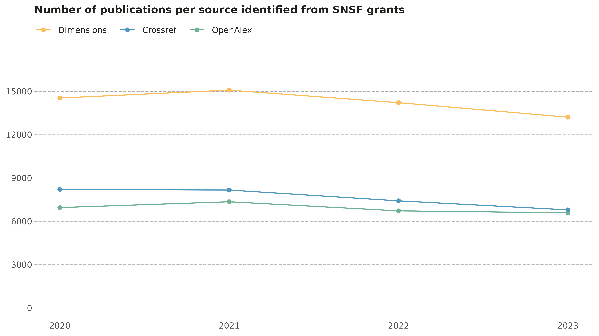
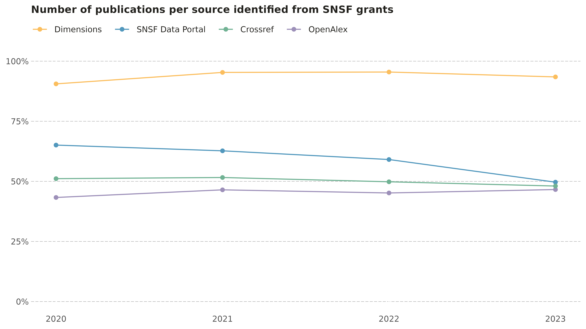
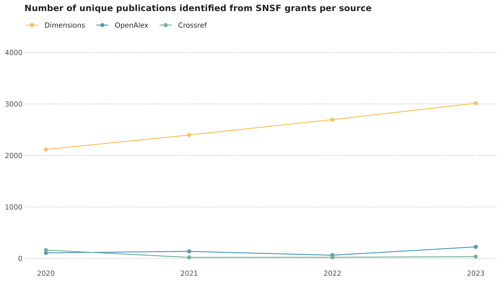
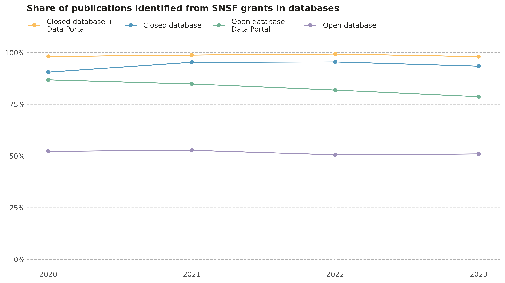

Monitoring open access publications at the SNSF: Challenges of open academic data
ror_presentation.Rmd
library(snsf.oa.ror.zurich.26)
library(dplyr)
library(readr)
library(forcats)
library(tidyr)
library(purrr)
library(ggplot2)
library(snf.datastory)
library(openalexR)
library(httr)
library(jsonlite)Abstract
The Swiss National Science Foundation (SNSF) expects its grantees to publish the results of their funded research in a freely accessible format. To meet this expectation, grantees can choose the gold or the green open access publication road. The gold road involves publishing in an open access (OA) journal, while the green road relates to publishing in a paywalled journal along with the upload of while simultaneously uploading the article to a public repository.
The Swiss National Science Foundation (SNSF) started an OA monitoring of the publications resulting from its grants in 2021. The primary source for this monitoring is the direct reporting the grantees provide to the SNSF about their publications. Access to open academic data from Crossref and OpenAlex are also important sources for identifying unreported publications resulting from SNSF-funded research. However, access to closed academic data from Dimensions is also critical to obtain a broader and more representative picture of SNSF-related publications. While all sources are important for the SNSF OA monitoring, Dimensions remains the largest source of unique publications.
This analysis describes how the SNSF uses academic databases for the OA monitoring of SNSF-related scientific publications and highlights the differences in terms of publications coverage between open and closed academic data, as well as the challenges of relying only on open academic data.
Using open and closed academic database for SNSF OA monitoring
SNSF OA monitoring
Since 2021, the SNSF conducts an annual monitoring of the OA status of scientific publications resulting from its funding. This monitoring relies on:
- Publications reported to the SNSF by grant recipients (publicly available for download via the SNSF Data Portal under Datasets → Output data: Scientific publications)
- Publications that acknowledge SNSF funding and are found through academic databases (Dimensions, Crossref, and, since 2025, OpenAlex)
- OA metadata for these publications retrieved via Unpaywall
Open academic databases are essential for ensuring transparency and reproducibility. In this analysis, we examine how SNSF-funded publications are represented across the different databases and consider the implications of relying exclusively on open academic data for the SNSF OA monitoring.
Note
Since metadata on recent publications are not always available and as reliable as needed, the SNSF OA monitoring is delayed by two years. As an example, this means that the 2025 monitoring covers works published in 2023. Accordingly, references to the “2023 OA monitoring” refer to publications from 2023.
Getting the data
This analysis focuses on the monitoring periods 2020–2023. The corresponding monitorings were published as data stories, and are available here (each with link to the corresponding GitHub repository and dataset):
- Open Access in 2020: up by 8 percentage points
- 2021: strongest improvement in Open Access-share yet
- OA monitoring 2022: strong increase and continued demand for article funding
- OA monitoring 2023: high level maintained and CC licences becoming more widespread.
Because the aim of this analysis is to evaluate the current databases coverage of SNSF‑funded publications (i.e. as of January 2026), we do not rely on the datasets used in the original OA monitorings. Instead, we updated the data on SNSF-funded publications by querying all sources.
Using updated datasets offers several advantages, including the inclusion of publication corrections, metadata updates and enrichments, and ongoing curation improvements applied by the databases since the original monitorings.
The code below loads the datasets1 with the publications marked as funded by the SNSF and published between 2020 and 2023, as found in OpenAlex, Dimensions, and Crossref. It also loads the publications from the SNSF Data Portal dataset for the same period.
These datasets were generated using the
get_snsf_work_*() family of functions with
period = 2020:2023. Note however that when using
get_snsf_work_dim() to get works from Dimensions, an API
key is required to access their API.
# Load the dataset with SNSF-funded publications published in 2020-2023 and
# available in the SNSF Data Portal.
dp_snsf_works <- snsf.oa.ror.zurich.26::dp_snsf_works |>
arrange(doi, dp_id, dp_publication_year, dp_type) |>
distinct(doi, .keep_all = TRUE)
# Load the dataset with SNSF-funded publications published in 2020-2023 and
# available in OpenAlex.
oax_snsf_works <- snsf.oa.ror.zurich.26::oax_snsf_works |>
arrange(doi, oax_id, oax_publication_year, oax_type) |>
distinct(doi, .keep_all = TRUE)
# Load the dataset with SNSF-funded publications published in 2020-2023 and
# available in Dimensions
dim_snsf_works <- snsf.oa.ror.zurich.26::dim_snsf_works |>
arrange(doi, dim_id, dim_publication_year, dim_type) |>
distinct(doi, .keep_all = TRUE)
# Load the dataset with SNSF-funded publications published in 2020-2023 and
# available in Crossref
cr_snsf_works <- snsf.oa.ror.zurich.26::cr_snsf_works |>
arrange(doi, cr_publication_year, cr_type) |>
distinct(doi, .keep_all = TRUE) |>
# For unknwon reason, there is a single publication that slipped in which has
# a publication year being 2025!
dplyr::filter(cr_publication_year %in% 2020:2023)Although this analysis does not use the datasets from earlier OA
monitorings available on Github, we still compare these data with the
updated datasets. The following code retrieves the past monitoring
datasets using get_snsf_oa_work().
# Read data for 2020 directly from the corresponding Github repository
dat_2020 <- get_snsf_oa_work(
"datastory_new_figures_oa_monitoring_2020",
"publications_2020_dec_2021.csv"
) |>
distinct(doi, .keep_all = TRUE)
# Read data for 2021 directly from the corresponding Github repository and add
# a flag when a DOI was already included in a earlier monitoring.
dat_2021 <- get_snsf_oa_work(
"datastory_oa_monitoring_2021",
"publications_2021_mar_2023.csv"
) |>
mutate(in_past_monitoring = doi %in% dat_2020[["doi"]]) |>
distinct(doi, .keep_all = TRUE)
# Read data for 2022 directly from the corresponding Github repository and add
# a flag when a DOI was already included in a earlier monitoring.
dat_2022 <- get_snsf_oa_work(
"datastory_open_access_publications_monitoring_2022",
"publications_2022_feb_2024.csv"
) |>
mutate(
in_past_monitoring = doi %in% c(dat_2020[["doi"]], dat_2021[["doi"]])
) |>
distinct(doi, .keep_all = TRUE)
# Read data for 2023 directly from the corresponding Github repository and add
# a flag when a DOI was already included in a earlier monitoring.
dat_2023 <- get_snsf_oa_work(
"datastory_open_access_publications_monitoring_2023",
"publications_2023_mar_2025.csv"
) |>
mutate(
in_past_monitoring = doi %in%
c(
dat_2020[["doi"]],
dat_2021[["doi"]],
dat_2022[["doi"]]
)
) |>
distinct(doi, .keep_all = TRUE)The next code chunk creates two data frames: one with the past monitorings data and one with the updated publication records.
# Combine all SNSF OA monitorings into a single data frame
all_snsf_oa <- bind_rows(dat_2020, dat_2021, dat_2022, dat_2023)
# Counting the number of unique DOIs and DOIs identified in a earlier
# monitoring.
snsf_oa_unique_dois <- all_snsf_oa |>
distinct(doi, in_past_monitoring) |>
mutate(in_past_monitoring = replace_na(in_past_monitoring, FALSE)) |>
count(in_past_monitoring)
# Combine the updated records from all sources into a single data frame
all_updated_publications <- list(
dp_snsf_works,
oax_snsf_works,
dim_snsf_works,
cr_snsf_works
) |>
reduce(\(x, y) full_join(x, y, by = join_by(doi))) |>
drop_na(doi) |>
dplyr::filter()After comparing DOIs, we see that:
- The 2020–2023 OA monitorings dataset has 56639 unique DOIs
- The updated records have 60905 unique DOIs
- 53222 were already present in earlier monitorings
- 7683 are newly identified publications
Cleaning publication records
Because the metadata are gathered from multiple sources, some fields may differ across databases. In the case of the “publication year”, the approach is to assign the earliest year available across all sources. For example, if a publication is flagged as published in 2023 in OpenAlex but 2022 in Dimensions, the publication year is set to 2022. The following code implements this approach.
# The final dataset with only unique publications
all_publications_clean_year <- all_updated_publications |>
# Row-by-row, we create a new variable with the oldest publication year for
# each publications (it may vary across sources).
rowwise() |>
mutate(
publication_year = min(
c(
dp_publication_year,
oax_publication_year,
dim_publication_year,
cr_publication_year
),
na.rm = TRUE
)
) |>
ungroup() |>
mutate(
in_dp = !is.na(dp_id),
in_oax = !is.na(oax_id),
in_dim = !is.na(dim_id),
in_cr = !is.na(cr_type),
) |>
select(doi, publication_year, starts_with("in_"))Representation of SNSF-funded publications in academic databases
We start by counting how many publications were found in each database and visualizing their evolution over time.
pub_counts_by_year <- all_publications_clean_year |>
summarise(
`OpenAlex` = sum(in_oax),
`Dimensions` = sum(in_dim),
`Crossref` = sum(in_cr),
.by = publication_year
) |>
pivot_longer(!publication_year, names_to = "source", values_to = "n")
pub_counts_by_year |>
mutate(source = fct_reorder(source, n, max, .desc = TRUE)) |>
ggplot() +
aes(x = publication_year, y = n, color = source) +
geom_line() +
geom_point() +
labs(
title = "Number of publications per source identified from SNSF grants",
x = "Publication year",
y = "Number of publications"
) +
scale_y_continuous(limits = c(0, 17000), breaks = seq(0, 15000, 3000)) +
scale_color_datastory() +
get_datastory_theme(gridline_axis = "y")
#> Warning: The `size` argument of `element_line()` is deprecated as of ggplot2 3.4.0.
#> ℹ Please use the `linewidth` argument instead.
#> ℹ The deprecated feature was likely used in the snf.datastory package.
#> Please report the issue to the authors.
#> This warning is displayed once per session.
#> Call `lifecycle::last_lifecycle_warnings()` to see where this warning was
#> generated.
The results show that Dimensions consistently has the largest number of SNSF‑funded publications, with an average of approximately 14,000 publications per year. This is roughly twice the number found in OpenAlex and Crossref, with between 7,000 and 8,000 publications.
share_by_year <- all_publications_clean_year |>
summarise(
`SNSF Data Portal` = sum(in_dp) / n(),
`OpenAlex` = sum(in_oax) / n(),
`Dimensions` = sum(in_dim) / n(),
`Crossref` = sum(in_cr) / n(),
.by = publication_year
) |>
pivot_longer(
!publication_year,
names_to = "source",
values_to = "prop"
)
share_by_year |>
mutate(source = fct_reorder(source, prop, max, .desc = TRUE)) |>
ggplot() +
aes(x = publication_year, y = prop, color = source) +
geom_line() +
geom_point() +
labs(
title = "Number of publications per source identified from SNSF grants",
x = "Publication year",
y = "Number of publications"
) +
scale_color_datastory() +
scale_y_continuous(
limits = c(0, 1),
labels = \(x) paste0(round(x * 100, 0), "%")
) +
get_datastory_theme(gridline_axis = "y")
Next, we examine the unique contribution of each database–that is, the number of publications not found in any other source, including the SNSF Data Portal.
unique_counts_by_year <- all_publications_clean_year |>
summarise(
`OpenAlex` = sum(!in_dp & !in_dim & in_oax & !in_cr),
`Dimensions` = sum(!in_dp & in_dim & !in_oax & !in_cr),
`Crossref` = sum(!in_dp & !in_dim & !in_oax & in_cr),
.by = publication_year
) |>
pivot_longer(!publication_year, names_to = "source", values_to = "n")
unique_counts_by_year |>
mutate(source = fct_reorder(source, n, max, .desc = TRUE)) |>
ggplot() +
aes(x = publication_year, y = n, color = source) +
geom_line() +
geom_point() +
labs(
title = "Number of unique publications identified from SNSF grants per source",
x = "Publication year",
y = "Number of publications"
) +
scale_y_continuous(limits = c(0, 4000)) +
scale_color_datastory() +
get_datastory_theme(gridline_axis = "y")
Dimensions contributes with between 2,000 and 3,000 unique publications per year, while OpenAlex and Crossref each contribute fewer than 200 unique publications per year.
Finally, we calculate in the last code chunk the share of DOIs covered when combining different data sources (only closed databases, only open databases, and combinations including the SNSF Data Portal).
db_share_by_year <- all_publications_clean_year |>
summarise(
`Open database` = sum(in_oax | in_cr) / n(),
`Closed database` = sum(in_dim) / n(),
`Open database +\nData Portal` = sum(in_dp | in_oax | in_cr) / n(),
`Closed database +\nData Portal` = sum(in_dp | in_dim) / n(),
.by = publication_year
) |>
pivot_longer(
!publication_year,
names_to = "source",
values_to = "prop"
)
db_share_by_year |>
mutate(
source = fct_reorder2(
source,
prop,
publication_year,
\(x, y) max(x[y == 2020]),
.desc = TRUE
)
) |>
ggplot() +
aes(x = publication_year, y = prop, color = source) +
geom_line() +
geom_point() +
labs(
title = "Share of publications identified from SNSF grants in databases",
x = "Publication year",
y = "Number of publications"
) +
scale_color_datastory() +
scale_y_continuous(
limits = c(0, 1),
labels = \(x) paste0(round(x * 100, 0), "%")
) +
get_datastory_theme(gridline_axis = "y")
The results show that relying solely on a closed academic database such as Dimensions would already capture 93.7% of all SNSF-funded publications identified across sources. Adding the SNSF Data Portal increases the coverage to 98.6% of all SNSF‑related publications. While relying solely on open academic database would cover only around half of all publications, combining them with publication in the SNSF Data Portal would improve the coverage with 83.1% of all SNSF-funded publications found.
Conclusions
This analysis shows that monitoring the open access of SNSF-funded publications requires a combination of open and closed academic databases. Even though using open academic databases such as Crossref and OpenAlex promotes transparency, reproducibility, and accessibility, they are currently not enough to access the largest part of SNSF-funded publications. Indeed, since Dimensions includes unique outputs not captured elsewhere in Dimensions, it is still enough to rely solely on their data, combined with the publications in the SNSF Data Portal, to conduct our OA monitoring.
The main challenge is the lack of a widely adopted standard for funding metadata. In practice, many authors continue to report funding information only as unstructured text within acknowledgements, rather than using structured metadata. This inconsistency limits the discoverability of funded research in open databases and makes it difficult to build reliable and open monitoring systems.